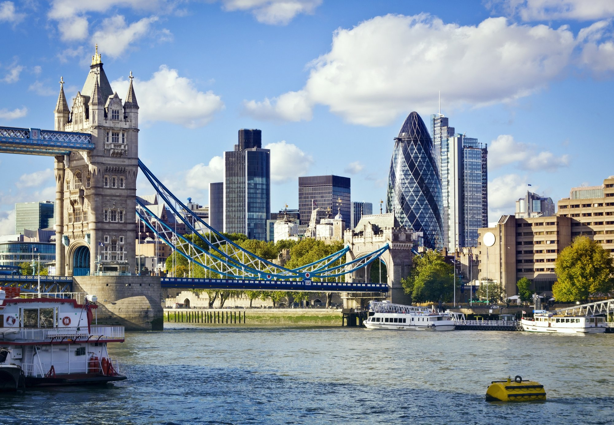
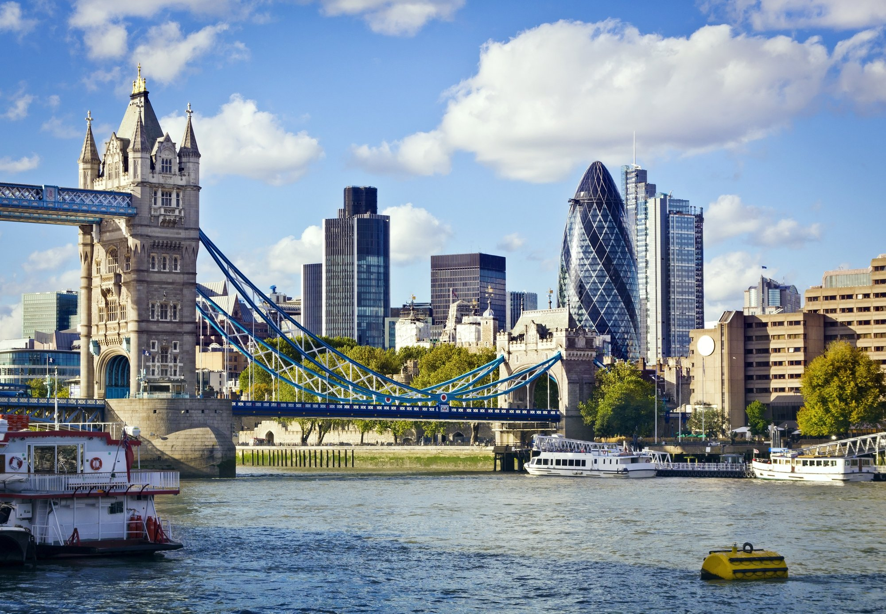

Лондон
Лондон - столица Великобритании и один из крупнейших городов Европы, который является мировым центром культуры, музыки, образования, моды, политики, финансов и торговли. Это яркий и шумный мегаполис с динамичной жизнью и замечательной космополитической атмосферой. Лондон - один из древнейших городов Европы, который имеет удивительную концентрацию самых разных достопримечательностей, памятников истории и культуры: роскошные дворцы, исторические здания, башни, мосты, старинные церкви, аттракционы и музеи мирового уровня.
Лондон был основан во времена Римской империи и на протяжении своей богатой истории был одним из важнейших городов Европы. Сюда стекались все богатства Соединённого Королевства, поэтому его столица имеет великолепные достопримечательности самых разных исторических эпох. Лондон - один из самых многогранных городов в мире, который вобрал в себя не только традиции Британии, но и культуры многих национальностей и народов. Это место потрясающего разнообразия, которое можно открывать и исследовать бесконечно.
 


Экстремальный Топ-10 🤓
Топ-10 районов по числу преступлений на тысячу человек:
- Вестминстер — 29,2,
- Кенсингтон и Челси — 11,9,
- Камден — 11,7,
- Харингей — 10,7,
- Хаммерсмит и Фулем — 10,4,
- Ислингтон — 10,4,
- Саутуарк — 10,1,
- Тауэр-Хамлетс — 10,1,
- Ламбет — 9,8,
- Хакни — 9,8.